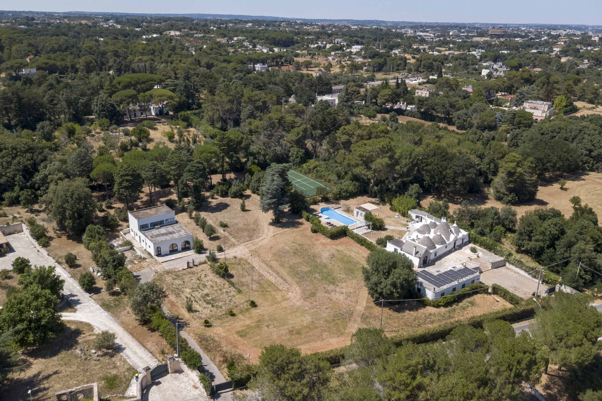

€750.000
Martina Franca · Puglia · Italy
Rare Martina Franca countryside compound of authentic stone trulli and lamie with vaulted rooms, a private outdoor pool, indoor spa pool/sauna, tennis and pine grove — old Apulian character with serious amenities at a bargain €750k.
Opened 15 Sep 2026 on Engel & Völkers Ostuni; asking €750.000; 722 m² / 5 bed / 4 bath / land 10360 m²; minutes from Martina Franca centre; habitable now.
Open the listing